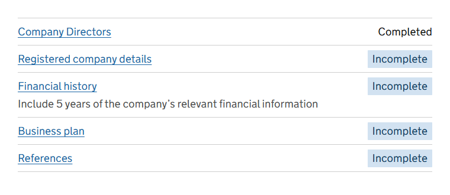
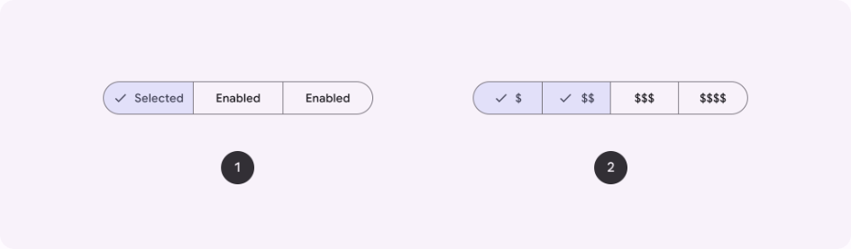
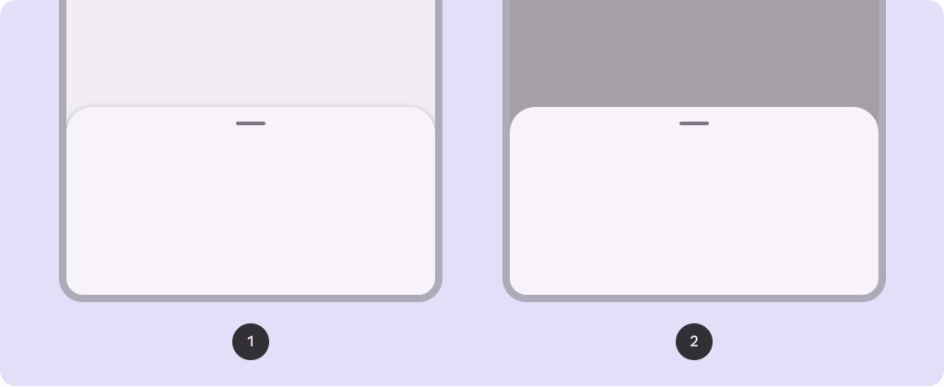
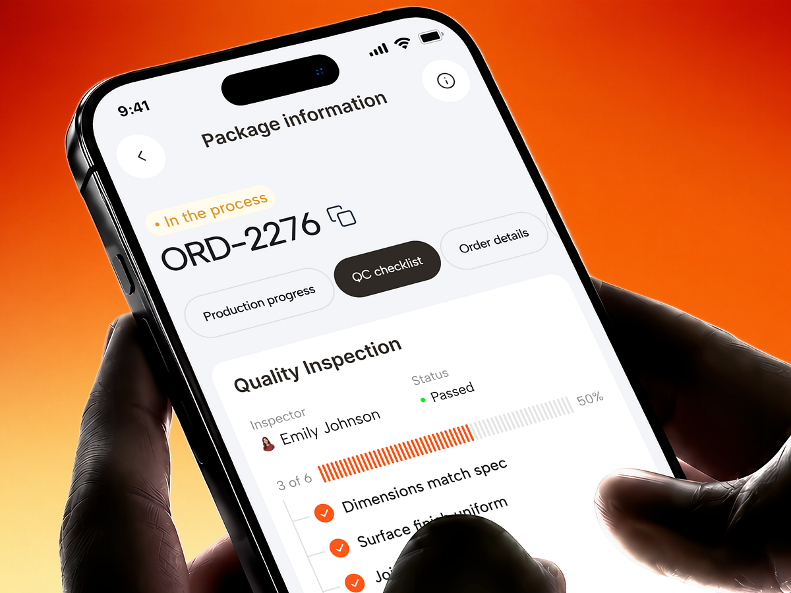

KCS — Kiểm hàng và Ghi lỗi, tham khảo các hệ thiết kế
Ba phương án mới, mỗi phương án dựng theo một nguồn thiết kế có tiếng: hệ thiết kế GOV.UK của chính phủ Anh, Material Design 3 của Google, và một mẫu app kiểm chất lượng trên Dribbble. Bấm thử được thật; mỗi phương án có bản máy tính và bản điện thoại. Dữ liệu vẫn là nhóm NTP26-0004 của Bibica.
Logic giữ nguyên ở cả ba
- Bước cuối Xén 3 mặt xét tiêu chí của cả nhóm, lệnh đi kèm Bìa trước rồi Ruột. Mỗi công đoạn có tiêu chí xét một lần: Đạt, hoặc Có lỗi thì chọn mục hỏng, gõ số lỗi tính bằng cuốn, mô tả tự điền theo mục hỏng, chụp ít nhất một ảnh. Mỗi công đoạn có lỗi là một dòng lỗi báo về tổ làm công đoạn đó.
- Lần kiểm gồm 588 cuốn tổ đã làm mà chưa kiểm; Đạt = 588 trừ tổng lỗi. "Đạt hết các công đoạn còn lại" không đè công đoạn đã chọn Có lỗi. Công đoạn không có tiêu chí (Cắt tờ, Gấp, Bắt tay + vào keo, Xén 3 mặt) ghi lỗi qua lối riêng.
- Nút Lưu khoá kèm một lý do theo thứ tự: còn công đoạn chưa xét, chưa chọn mục hỏng, chưa gõ số lỗi, chưa có ảnh, tổng lỗi vượt 588, quá 10 ảnh.
- Ghi lỗi ở công đoạn giữa (Gấp): đếm bằng tay sách, lỗi do chính Gấp hoặc công đoạn trước của Ruột, ít nhất một ảnh, không vượt số tổ đã làm trừ lỗi đã ghi.
Phương án D — Hỏi từng câu (GOV.UK)
Mỗi lúc chỉ hỏi một câu: "Cán màng có đạt không?". Hai lựa chọn tròn to. Chọn Có lỗi thì phần cần điền tự hiện ra ngay dưới, chọn Đạt thì không hiện gì thêm.
- Cột trái là danh sách việc, mỗi việc một nhãn: Chưa xét, Đạt, Có lỗi. Bấm việc nào thì sang câu đó.
- Việc cuối là "Xem lại trước khi lưu": bảng hai cột, mỗi dòng có nút Sửa, kèm tổng Đạt và Lỗi.
- Trên điện thoại chỉ thấy một câu, có lối "‹ Danh sách việc" để quay lại. Ghi lỗi ở Gấp cũng là một trang hỏi như vậy.

GOV.UK Design System, Task list. Học: danh sách việc chỉ có tên và một nhãn trạng thái, việc chưa xong nổi lên nhờ nhãn.
Radios hiện thêm ô, Summary list. Học: chọn rồi mới hiện phần liên quan; xem lại cả phiếu trước khi gửi, sửa từng dòng.
Máy tínhĐang ở câu Cán màng, đã chọn Có lỗi.
Máy tínhBấm Ghi lỗi ở Gấp.
Điện thoại
Phương án E — Một dòng một công đoạn, lỗi ghi ở tấm bên (Material Design 3)
Danh sách gọn: mỗi công đoạn một dòng, tiêu chí là các thẻ nhỏ dưới tên, cuối dòng là nút hai nửa Đạt | Có lỗi. Chọn Có lỗi thì tấm ghi lỗi mở bên phải; dòng chỉ còn tóm tắt mục hỏng, số lỗi, số ảnh.
- Mục hỏng là các thẻ bấm chọn được, chọn là tô đỏ nhạt và có dấu tích.
- Trên điện thoại tấm ghi lỗi trượt từ dưới lên, có thanh kéo trên đầu.
- Ghi lỗi ở Gấp dùng lại đúng tấm đó: một khuôn ghi lỗi cho cả bước cuối và công đoạn giữa.

Material 3, Segmented button. Học: hai lựa chọn loại trừ nhau đặt cạnh nhau trong một viên, nửa được chọn tô nền và có dấu tích.

Material 3, Bottom sheet. Học: phần nhập phụ nằm trên một tấm trượt lên, danh sách chính vẫn ở dưới, đóng tấm là về chỗ cũ.
Máy tínhĐang ghi lỗi Cán màng ở tấm bên phải.
Máy tínhBấm Ghi lỗi ở Gấp: cùng một tấm.
LSX26-0003 Ruột
Cắt tờ2.100 tờ
Bài in 3 màu 4 màu (CMYK)2.100 tờ in
Gấp16.000 tay sách
Bắt tay + vào keo2.400 cuốn
Xén 3 mặt2.400 cuốn
Điện thoạiTấm ghi lỗi trượt từ dưới lên.
Kiểm hàng, tấm Cán màng đang mở
Phương án F — Thanh tiến độ và dòng chảy công đoạn (Dribbble, app QC Velluto)
Trên cùng là thẻ tiến độ: thanh vạch "2 trên 4 công đoạn", số Đạt và Lỗi. Dưới là hai cột Bìa và Ruột, mỗi cột là một trục dọc đủ các công đoạn theo đúng thứ tự làm.
- Công đoạn có tiêu chí là chấm to, có nút Đạt và Có lỗi. Công đoạn không có tiêu chí là chấm nhỏ, chỉ có lối "+ Ghi lỗi" đúng tại chỗ của nó. Lỗi ở Bắt tay + vào keo nằm ngay dưới Bắt tay + vào keo, không cần ô chọn công đoạn.
- Người kiểm nhìn được cả chuỗi giống sơ đồ chuỗi ở màn danh sách phương án B đã chọn.
- Ghi lỗi ở Gấp: thẻ có thanh "đã ghi 40 trên 16.000 tay sách" rồi ô nhập.

Dribbble, Velluto — app sản xuất, tab QC checklist. Học: thanh tiến độ vạch "3 of 6" ngay trên đầu, các mục kiểm xếp trên một trục dọc có chấm tròn.
Máy tínhBấm Kiểm hàng ở Xén 3 mặt.
Máy tínhBấm Ghi lỗi ở Gấp.
Điện thoạiHai cột Bìa và Ruột xếp chồng.